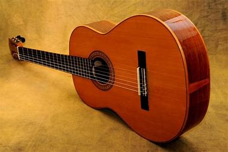
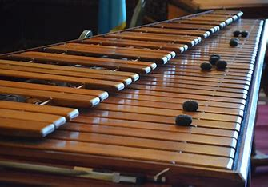

Instrumentos Chiapanecos
Tunkul
Guitarras
Marimba
Tambor
Flauta
Arpa
Tunkul Maya
Instrumento ceremonial de percusión de origen prehispánico, tallado a mano con tronco de ceiba para obtener su característico sonido grave.
Ver más

Guitarra Tradicional
Emblemático instrumento de cuerdas fabricado con maderas locales, utilizado para acompañar sones y marimbas en festividades tradicionales.
Ver más

Marimba Chiapaneca
Símbolo de identidad regional, esta marimba artesanal produce melodías dulces gracias a sus teclas de hormiguillo y resonadores naturales.
Ver más
Tambor Ceremonial
Instrumento de percusión elaborado con piel de venado y tronco ahuecado, usado en rituales y danzas de los pueblos tzotziles.
Ver más
Flauta de Carrizo
Hecha de caña de carrizo y afinada manualmente, esta flauta acompaña cantos y procesiones religiosas en la cultura chiapaneca.
Ver más
Arpa Tradicional
Con 32 cuerdas tensadas sobre una estructura de caoba, el arpa tradicional aporta elegancia y solemnidad a la música regional.
Ver más
.jpeg)
.jpeg)
.jpeg)
.jpeg)